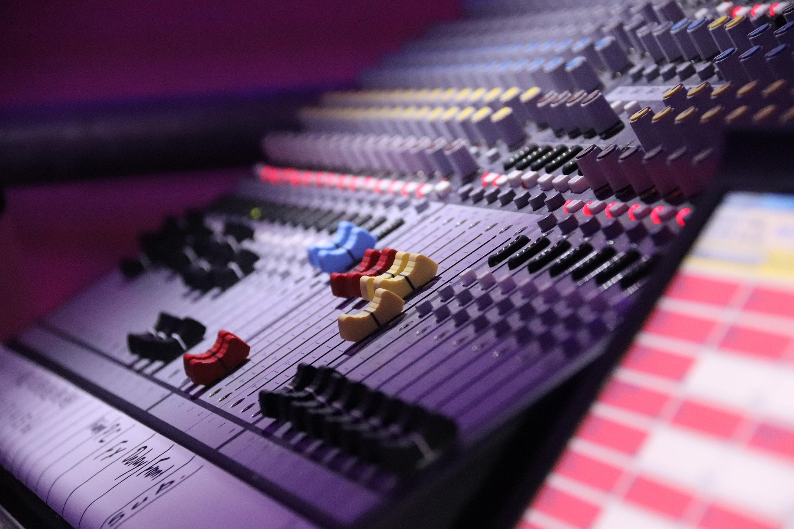

Pianoforte

Suono il Pianoforte da oltre un decennio:
- Pianoforte Moderno
- Pianoforte Jazz
- Improvvisazione
- Teoria e Armonia
- Composizione
Produzione
Produco da vari anni con diversi musicisti
- Fl Studio 21
- Ableton Live 11
- Colonne sonore
- Jazz, Chill, Lo-Fi
- Musica Elettronica
Missaggio
Competenze riguardo il Mixing
- Teoria del Suono
- Gestione Volumi(Gain Staging)
- Filtri, EQ
- Processori Dinamica
- Delay, Reverberi
- Sintetizzatori
- Saturatori, Distorsori
- Effetti Sound Design
- Mastering